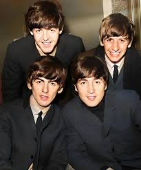
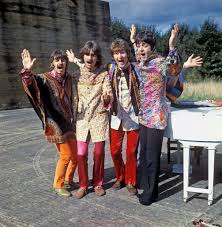

The Beatles were four young musicians from Liverpool. John Lennon, Paul McCartney, George Harrison and Ringo Starr. From there, they started making classic pop and rock songs, like She Loves You and I Saw Her Standing There. The further they got into their career, the more and more they experimented with the sound they were creating, making more psychedelic songs like Strawberry Fields Forever and others. They led the rock innovation of the 1960s with their inventions and music genius. The Lennon McCartney songwriting duo wrote some of the most iconic songs of our generation that continue to have an impact on modern music everyday. John, a singer and guitarist, and Paul, a singer and bassist were mostly self-taught musicians. They first met and performed together in 1957, Paul later that year introducing George, also a guitarist, to Lennon, adding him to their group. Their band was originally called The Quarrymen, and had two members before Ringo Starr joined, Pete Best on drums and Stuart Sutcliffe on bass. One day in 1691, Brian Epstein walked into a local Liverpool club called the cavern club, and fell in love with the band he saw on stage, and was totally convinced of their potential. He eventually got them signed and they started making albums like Please Please me and A Hard Day’s Night from there. The Band was so successful that British newspapers began to use a word for the insane popularity: Beatlemania.
In 1967, The Beatles had very successfully been making music for several years. The band had been putting off their next album, Magical Mystery Tour, lacking motivation, until their manager Brian Epstein died, which gave them the drive they needed. After their manager’s death, they needed someone to fill the spot, so Paul took it upon himself to direct the band and keep them in order. This increased tensions between the bandmates, believing it disrupted their original dynamic and they didn't like Paul’s perfectionism and the way he stifled their creativity. During the recording of Sgt. Pepper’s Lonely Hearts Club Band, George was already feeling discouraged by the band, as Lennon and McCartney wouldn't let him have as many songs on their albums, and never listened to his ideas. Paul later said that this was because they still saw him as a little brother from their early days, so it was hard to believe he had actually been writing songs. Relationships only strained further as time went on. Around this time, John met an artist, Yoko Ono, who he soon fell in love with. A lot of people blame her for the disbandment of the Beatles since the other bandmates didn't like her and she often sat in on sessions despite their ‘no outsiders’ policy. It’s actually the contrary, because Yoko was the one that persuaded John to keep going to their recording sessions long after he originally wanted to leave the band. John was the first to officially quit the band, telling the members privately that he ‘wanted a divorce’ in 1969. The band soon broke up after they finished their recording of Let it Be, but Paul McCartney only publicly announced it in 1970, which led to him getting blamed.